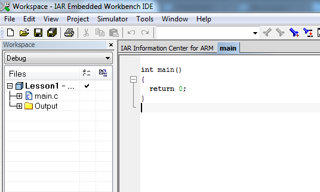
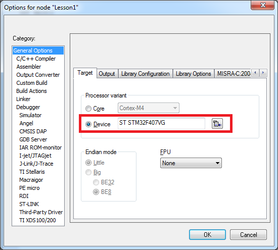
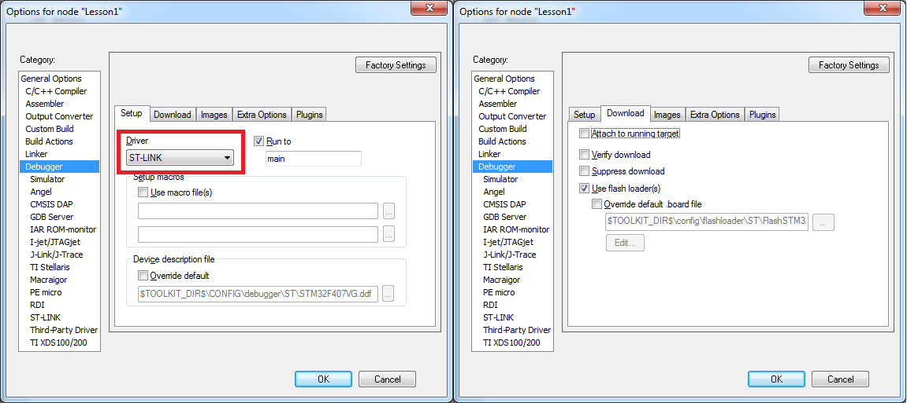
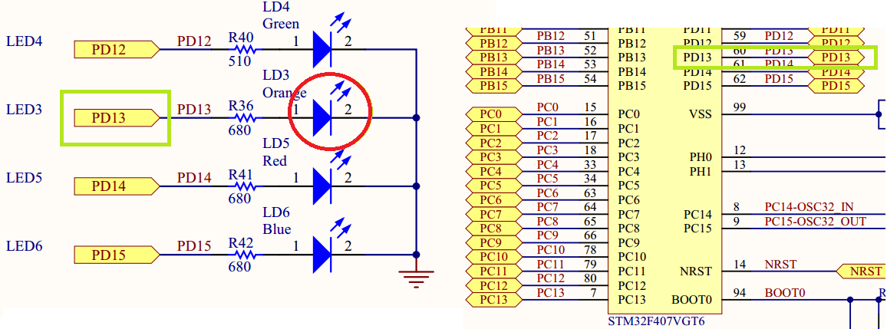
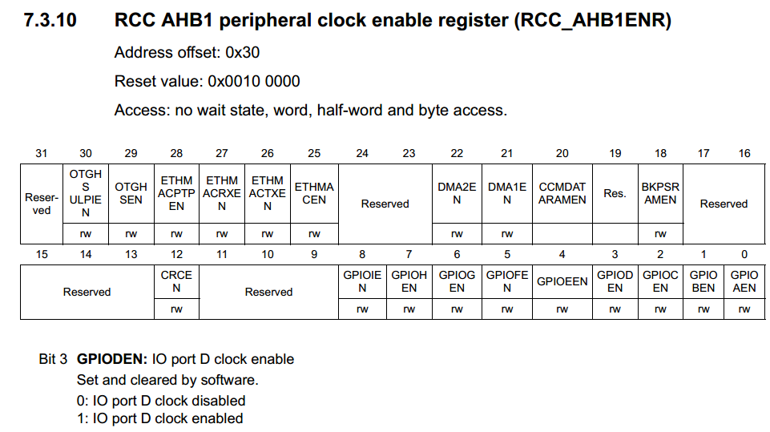
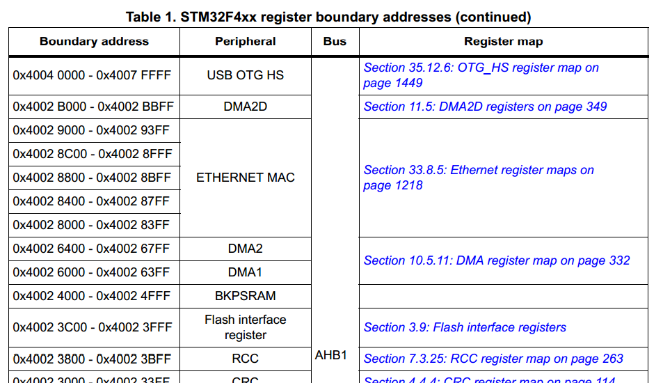
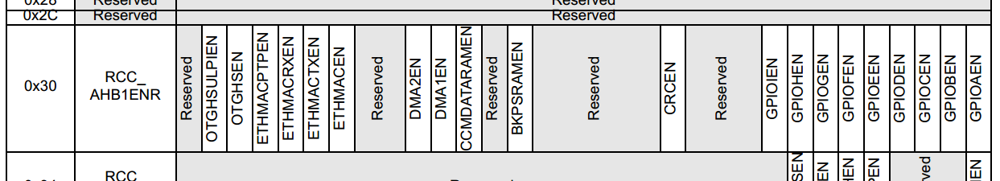
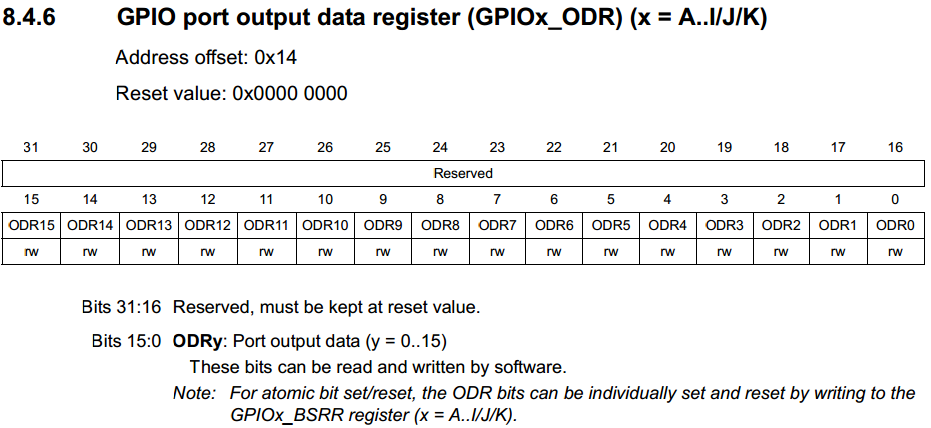
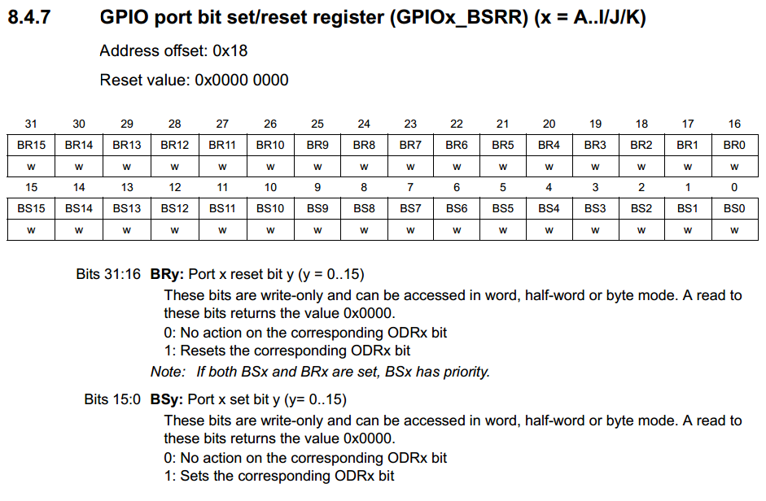
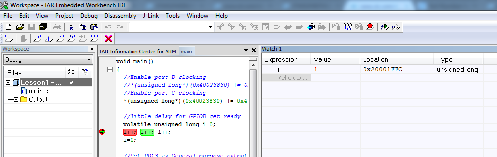

Данная статья является первой в планируемом цикле статей по изучению программирования микроконтроллеров. Изучая различные материалы я отметил, что практически все они начинаются с того, что новичку предлагается скачать (или использовать идущую со средой разработки) библиотеку для работы с периферийными устройствами и использовать ее для написания своей первой программы (обычно мигание светодиодом).
Меня это сильно удивило. Если верить данным статьям, для программирования не обязательно даже читать документацию к программируемому контроллеру. Меня же учили премудростям «железного программирования» совершенно иначе.
В этой статье, путь от фразы «Да, я хочу попробовать!» до радостного подмигивания светодиода, будет значительно длиннее чем у других авторов. Я постараюсь раскрыть аспекты программирования микроконтроллеров, которые прячутся за использованием библиотечных функций и готовых примеров.
Если вы намерены серьезно изучать программирование микроконтроллеров данная статья для вас. Возможно, она может заинтересовать и тех, кто вдоволь наигрался с Arduino и хочет получить в свои руки все аппаратные возможности железа.
Выбор микроконтроллера
Многие могут сказать, что начинать изучение микроконтроллеров лучше с AVR, PIC, 8051 или чего-то еще. Вопрос многогранный и спорный. Я знаю достаточно примеров, когда люди изучив Cortex-M, программировали AVR, ARM7 и т.д. Сам же я начинал с Cortex-M3. Если перед вами стоит определенная задача, в интернете достаточно много информации со сравнением различных типов микроконтроллеров и решаемых с их помощью задач. На хабре этот вопрос тоже поднимался, например тут.
Будем считать, что с типом микроконтроллера мы разобрались. Но на рынке представлен огромнейший спектр различных модификаций от разных производителей. Они отличаются по множеству параметров — от размера флеш памяти до количества аналоговых входов. Для каждой задачи выбор стоит производить индивидуально. Ни каких общих рекомендаций тут нет и быть не может. Отмечу лишь, что стоит начинать изучение с МК производителей имеющих как можно больший ассортимент. Тогда, при выборе МК для определенной задачи достаточно велик шанс, что из представленного ассортимента вам что-нибудь да подойдет.
Я остановил свой выбор на STM32 (хотя и считаю, что лучше начинать изучение с МК от TexasInstruments — очень грамотно составлена документация), потому что они широко распространены среди российских разработчиков электроники. При возникновении проблем и вопросов вы сможете без труда найти решения на форумах. Еще одним плюсом является богатый выбор демонстрационных плат как от производителя, так и от сторонних организаций.
Что необходимо для изучения?
К сожалению, для начала программирования МК не достаточно одного лишь ПК. Придется где-то раздобыть демонстрационную плату и программатор. Хотя это и уменьшает конкуренцию на рынке труда.
Сам я использую демонстрационную плату STM3220G-EVAL и программатор J-Link PRO. Но для начала, будет вполне достаточно STM32F4DISCOVERY, которую можно купить без особых проблем за небольшую сумму.
Все примеры будут именно для отладочной платы STM32F4DISCOVERY. На данном этапе нам будет совершенно не важно, что этой плате стоит МК на базе ядра Cortex-M4. В ближайшее время мы не будем использовать его особенности и преимущества над Cortex-M3. А как там будет дальше — посмотрим.
Если у вас есть в наличии любая другая плата на базе STM32F2xx/STM32F4xx, вы сможете работать с ней. В изложении материала я постараюсь максимально подробно описывать почему мы делаем именно так, а не иначе. Надеюсь ни у кого не возникнет проблем с переносом примеров на другое железо.
Среда разработки
Как уже неоднократно упоминалось, для ARM микроконтроллеров существует достаточное количество сред разработки, как платных так и не очень. И снова хочется опустить полемику по этому поводу. Я использую IAR Embedded Workbench for ARM 6.60. Все примеры будут именно в этой среде. Если вам по душе (или в вашей организации используется) что-то другое (Keil, Eclipse, CCS, CooCoc и т.д.) то это вам тоже не очень помешает. На особенности, связанные именно со средой разработки, я буду обращать отдельное внимание.
Почему платная среда разработки?
Возможно, кто-то будет не совсем доволен тем, что я предлагаю использовать платную среду разработки, но в IAR есть возможность получить временную лицензию без ограничения функционала, либо безлимитную лицензию с ограничением по размеру кода (32КБ для МК это очень много).
Помимо этого, сразу замечу, что для некоторых МК не существует бесплатных сред разработки. И к сожалению эти МК в некоторых областях незаменимы.
Процесс установки я описывать не буду.
Создание проекта
Для начала создадим пустой проект. IAR позволяет создать проекты на ASM, C и C++. Мы будем использовать чистый C. Перед нами появится пустой проект с main файлом.

Теперь необходимо настроить проект для начала работы с «нашим» МК и отладчиком. На плате STM32F4DISCOVERY установлен MK STM32F407VG . Его необходимо выбрать в свойствах проекта (General Options->Target->Device):

При выборе целевого программируемого процессора происходит загрузка его описания, что дает широкие возможности для отладки (об этом будет идти речь ниже). Кроме того, автоматически присоединяется конфигурационный файл с описанием доступного адресного пространства для линкера. Если будет необходимо, мы затронем тему конфигурационного файла линкера в следующих статьях.
После этого необходимо настроить отладчик. Отладка программы происходит непосредственно «в железе». Производится это с помощью JTAG отладчика. Более подробнее ознакомиться с тем, как это происходит можно на Википедии. На плату STM32F4DISCOVERY интегрирован отладчик ST-LINK/V2. Для работы с отладчиком необходимо выбрать его драйвер в меню Debugger->Setup->Driver. Так же необходимо указать, что отладка должна производиться непосредственно в железе. Для этого необходимо поставить флаг Debugger->Download->Use flash loader(s)

Теперь проект готов для работы (программирования, заливки и отладки).
Для тех, кто увидел слово Simulator:
Теоретически, IAR позволяет отлаживать программы с использованием симулятора. Но я ни разу на практике не встречал его использования.
«ТЗ» для первого проекта
Подведем промежуточный итог: МК и отладочная плата выбраны, проект подготовлен. Пора определиться с задачей.
Не будем отходить от классики. Первым проектом будет мигающий светодиод. Благо на плате их предостаточно.Что же это означает с точки зрения программирования? Первым делом необходимо изучить принципиальную схему демонстрационной платы и понять как «заводится» светодиод.
User manualдоступен на сайте производителя. В данном описании даже есть отдельный раздел про светодиоды на плате -4.4 LEDs. Для примера, будем использовать User LD3. Найдем его на схеме:

Простейший анализ схемы говорит о том, что для того, что бы «зажечь» светодиод необходимо на пин МК подать «1» (которая для данного МК соответствует 3.3В). Выключение производится подачей на этот пин «0». На схеме этот пин обозначается PD13 (это, наверное, самая важная информация из этого документа).
В итоге, мы можем написать «ТЗ» для нашей первой программы:
Программа для МК должна переводить состояние пина МК PD13 из состояния «0» в состояние «1» и обратно с некоторой периодичностью, различимой для человеческого глаза (важное замечание, если моргать светодиодом слишком часто глаз может этого не различить).
Прежде чем приступать к программированию, или немного теории
Прежде чем приступить к реализации нашего ТЗ, необходимо понять как производится управление МК.
Начнем с того, что любой МК включает ядро, память и периферийные блоки. Думаю, что с памятью пока все понятно. Упомяну лишь, в STM32 есть флеш память в которой хранится программа МК (в общем случае это не верное утверждение, программа может храниться во внешней энергонезависимой памяти, но пока это опустим) и другие данные, в том числе и пользовательские. Так же есть SRAM — оперативная память.
Ядро — часть микроконтроллера, осуществляющая выполнение одного потока команд. В нашем МК тип ядра — Cortex-M4. Ядро МК можно сравнить с процессором в ПК. Оно умеет только выполнять команды и передавать данные другим блокам (в этом сравнении не учитываются процессоры с интегрированными графическими ускорителями).
При этом производитель МК не разрабатывает ядро. Ядро покупается у компании ARM Limited. Главное отличие между различными МК — в периферии.
Периферийные блоки — блоки осуществляющие взаимодействие с «внешним миром» или выполняющие специфические функции, недоступные ядру МК. Современные МК (в том числе и STM32) содержат огромный спектр периферийных блоков. Периферийные блоки предназначены для решения различных задач, от считывания значения напряжения с аналогового входа МК до передачи данных внешним устройствам по шине SPI.
В отличии от ядра МК периферийные блоки не выполняют инструкции. Они лишь выполняют команды ядра. При этом участие ядра при выполнении команды не требуется.
Пример
В качестве примера можно привести блок UART, который предназначен для приема и передачи данных от МК внешним устройствам. От ядра необходимо лишь сконфигурировать блок и отдать ему данные для передачи. После этого ядро может дальше выполнять инструкции. На плечи же периферийного блока ложится управление соответствующим выводом МК для передачи данных в соответствии с протоколом. Периферийный блок сам переводит выход МК в необходимое состояние «0» или «1» в нужный момент времени, осуществляя передачу.
Взаимодействие ядра с периферийным блоком
Взаимодействие ядра МК с периферийным блоком осуществляется с помощью спецрегистров (есть еще взаимодействие через механизм прерываний и DMA, но об этом в следующих постах). С точки зрения ядра это просто участок памяти с определенным адресом, вот только на самом деле это не так. Запись данных в спецрегистр эквивалентна передаче команды или данных периферийному блоку. Считывание — получение данных от блока или считывание его состояния. Описание периферийных блоков и их спецрегистров занимает львиную долю описания МК.
ВАЖНО: После записи данных в спецрегистр и последующем чтении вы можете получить совершенно иные данные. Например, передача данных блоку UART для отправки, и считывание данных, полученных блоком от внешнего устройства, осуществляется с помощью одного и того же регистра.
Спецрегистры обычно разделены на битовые поля. Один (или несколько) бит управляют определенным параметром периферийного блока, обычно независимо. Например, разные биты одного регистра управляют состоянием разных выходов МК.
Вспоминаем С
Если вы гуру в языке C, то можете смело пропускать данный раздел. Он предназначен в первую очередь для тех, кого учили (или ктоучился сам) программировать для ПК. Опыт показывает, что люди часто не помнят важных команд. Здесь я вкратце напомню про побитовые операции и работу напрямую с памятью по ее адресу.
Запись данных по адресу в памяти
Предположим, что читая описание периферийного блока, мы поняли, что для его корректной работы необходимо записать в него число 0x3B. Адрес спецрегистра 0x60004012. Регистр 32-битный.
Если вы сразу не знаете как это сделать, попробую описать цепочку рассуждений для получения правильной команды.
Значение 0x60004012 есть не что иное, как значение указателя на ячейку памяти. Нужно именно это и указать в нашей программе, тоесть сделать преобразование типов согласно синтаксису языка C:
(unsigned long*)(0x60004012)
Таким образом, у нас есть указатель на элемент. Теперь нужно в этот элемент записать необходимое значение. Делается это разыменовыванием указателя. Таким образом получаем правильную команду:
*(unsigned long*)(0x60004012) = 0x3B;
Установка произвольных бит в 1
Предположим, что необходимо установить «1» в 7 и 1 биты по адресу 0x60004012, при этом не изменив значение всех остальных бит в регистре. Для этого необходимо использовать бинарную операцию |. Сразу приведу правильный ответ:
*(unsigned long*)(0x60004012) |= 0x82;
Обратите внимание на 2 факта. Биты считаются с нулевого, а не с первого. Данная операция на самом деле занимает не менее 3 тактов — считывание значения, модификация, запись. Иногда это не допустимо, поскольку между считыванием и записью значение одного из бит, которые нам запрещено изменять, могло быть изменено периферийным блоком. Незабывайте про эту особенность, иначе могут полезть баги, которые крайне сложно отловить.
Установка произвольных бит в 0
Предположим, что необходимо установить «0» в 7 и 1 биты по адресу 0x60004012, при этом не изменив значение всех остальных бит в регистре. Для этого необходимо использовать бинарную операцию &. Сразу приведу правильный ответ:
*(unsigned long*)(0x60004012) &= 0xFFFFFF7D;
Или его более простою запись (не переживайте за лишнюю операцию, компилятор все заранее посчитает даже при минимальной оптимизации):
*(unsigned long*)(0x60004012) &= (~0x82);
Некоторые особенности программ для МК
Здесь я постараюсь описать некоторые особенности программ для МК, которые важно помнить. Вещи достаточно очевидные, но все же.
У программы нет конца
В отличии от большинства программ для ПК, программа для МК не должна заканчиваться, НИКОГДА! А что собственно должен будет делать МК после завершения вашей программы? Вопрос, практически, риторический. Поэтому не забываем убедиться в том, что вы не забыли вечный цикл. При желании, можно перевести МК в режим сна.
Пользуйтесь целочисленными переменными
Не смотря на то, что мы используем МК с ядром Cortex-M4, который аппаратно выполняет операции над числами с плавающей точкой, советую вам отказаться от их использования. В МК без поддержки таких операций время вычислений будет просто огромным.
Откажитесь от динамического выделения памяти
Это только совет. Причина проста — памяти мало. Я не раз встречался с библиотеками, в которых были «медленные утечки» памяти. Было очень неприятно, когда после нескольких недель стабильной работы МК зависал с ошибкой. Лучше заранее продумать архитектуру своей программы так, чтобы не пришлось использовать динамическое выделение памяти.
Если же все-таки хочется использовать — внимательно изучите работу менеджера памяти или пишите свой.
Приступаем к работе!
Работа над программой для МК всегда начинается с чтения документации. Для нашего МК Reference manual доступен на сайте производителя. Страниц много, но все читать пока не нужно. Как уже было сказано, большую часть документации составляет описание периферийных блоков и их регистров. Так же хочу обратить внимание на то, что этот Reference Manual написан не для одного МК, а для нескольких линеек. Это говорит о том, что код будет переносим при переходе на другие МК в этих линейках (если конечно не пытаться использовать периферийные блоки которых нет в используемом МК).
В первую очередь необходимо определиться с какими блоками предстоит работать. Для это достаточно изучить разделы Introduction и Main features.
Непосредственное управление состоянием пинов МК осуществляется с помощью блока GPIO. Как указано в документации в МК STM32 может быть до 11 независимых блоков GPIO. Различные периферийные блоки GPIO принято называть портами. Порты обозначаются буквам от A до K. Каждый порт может содержать до 16 пинов. Как мы отметили ранее, светодиод подключается к пину PD13. Это означает, что управление этим пином осуществляется периферийным блоком GPIO порт D. Номер пина 13.
Ни каких других периферийных блоков на это раз нам не понадобится.
Управление тактированием периферийных блоков
Для снижения электропотребления МК практически все периферийные блоки после включения МК отключены. Включение/выключение блока производится подачей/прекращением подачи тактового сигнала на его вход. Для корректной работы, необходимо сконфигурировать контроллер тактового сигнала МК, чтобы необходимому периферийному блоку поступал тактовый сигнал.
Важно:Периферийный блок не может начать работу сразу после включения тактового сигнала. Необходимо подождать несколько тактов пока он «запустится». Люди, использующие библиотеки для периферийных устройств, зачастую даже не знают об этой особенности.
За включение тактирования периферийных блоков отвечают регистры RCC XXX peripheral clock enable register.На месте XXX могут стоять шины AHB1, AHB2, AHB3, APB1 и APB2. После внимательного изучения описания соответствующих регистров, можно сделать вывод о том, тактирование периферийного блока GPIOD включается установкой «1» в третий бит регистра RCC AHB1 peripheral clock enable register (RCC_AHB1ENR):

Теперь необходимо разобраться с тем, как узнать адрес самого регистра RCC_AHB1ENR.
Замечание: Описание системы тактирования МК STM32 достойно отдельной статьи. Если у читателей возникнет желание, я подробнее освещу этот раздел в одной из следующих статей.
Определение адресов спецрегистров
Определение адресов спецрегистров необходимо начинать с чтения раздела Memory map в Reference manual. Можно заметить, что каждому блоку выделен свой участок адресного пространства. Например, для блока RCC это участок 0x4002 3800 — 0x4002 3BFF:

Перейдя по ссылке к Register map блока RCC находим строчкку с интересующим нас регистром RCC_AHB1ENR:

Для получения адреса регистра, необходимо к начальному значению адресного пространства блока RCC прибавить Addr. offset нужного регистра. Addres offset указывается и в описании регистра (см. скриншот выше).
В итоге, мы определили адрес регистра RCC_AHB1ENR — 0x4002 3830.
Блок GPIO
Для общего ознакомления с блоком GPIO я настоятельно рекомендую полностью прочитать соответствующий раздел Reference Manual. Пока можно не особо обращать внимание на Alternate mode. Это оставим на потом.
Сейчас же наша задача научиться управлять состоянием пинов МК. Перейдем сразу к описанию регистров GPIO.
Режим работы
В первую очередь необходимо установить режим работы 13 пина порта D как General purpose output mode, что означает что блок GPIO будет управлять состоянием пина МК. Управление режимом работы пинов МК производитсяс помощью регистра GPIO port mode register (GPIOx_MODER) (x = A..I/J/K):
Как видно из описания для совершения требуемой нам настройки необходимо записать значение 01b в 26-27 биты регистра GPIOx_MODER. Адрес регистра можно определить тем же методом, что описан выше.
Настройка параметров работы выходных пинов порта GPIO
Блок GPIO позволяет применить дополнительные настройки для выходных пинов порта. Данные настройки производятся в регистрах:
Мы не будем менять данных параметров, поскольку нас вполне устраивают значения по умолчанию.
Установка значения на пине МК
Наконец-то мы подошли к моменту управления состоянием выхода МК. Для установки выходного значения на определенном пине МК есть два метода.
Используем регистр GPIO port bit set/reset register (GPIOx_BSRR)

Запись «0» или «1» в биты 0-16 приводят к соответствующему изменению состояния пинов порта. Для того, чтобы установить определенное значение на выходе одного или нескольких пинов МК и не изменить состояния остальных, необходимо будет пользоваться операцией модификации отдельных бит. Такая операция выполняется не менее чем за 3 такта. Если же необходимо в часть битов записать 1, а в другие 0, то понадобится не менее 4 тактов. Данный метод предпочтительнее всего использовать для изменения состояния выхода на противоположное, если его изначальное состояние не известно.
GPIO port bit set/reset register (GPIOx_BSRR)

В отличии от предыдущего метода, запись 0 в любой из битов данного регистра не приведет ни к чему (да и вообще, все биты write-only!). Запись 1 в биты 0-15 приведет к установке «1» на соответствующем выходе МК. Запись 1 в биты 16-31 приведет к установке «0» на соответствующем выходе МК. Этот метод предпочтительнее предыдущего, если необходимо установить определенное значение на пине «МК», а не изменить его.
Зажигаем светодиод!
Найдя адреса всех необходимых регистров, можно написать программу, которая включает светодиод:
void main()
{
//Enable port D clocking
*(unsigned long*)(0x40023830) |= 0x8;
//little delay for GPIOD get ready
volatile unsigned long i=0;
i++; i++; i++;
i=0;
//Set PD13 as General purpose output
*(unsigned long*)(0x40020C00) = (*(unsigned long*)(0x40020C00)& (~0x0C000000)) | (0x04000000);
//Turn LED ON!
*(unsigned long*)(0x40020C14) |= 0x2000;
while(1);
}
Можно компилировать (Project->Compile) и заливать (Project->Download->Download active application). Или запустить отладку (Project->Dpwnload and Debug) и начать выполнение (F5).
Светодиод загорелся!
Мигаем светодиодом
Мигание светодиода есть ни что иное, как попеременное включение и выключение с задержкой между этими действиями. Самый простой способ — поместить включение и выключение в вечный цикл, а между ними вставить задержку.
void main()
{
//Enable port D clocking
*(unsigned long*)(0x40023830) |= 0x8;
//little delay for GPIOD get ready
volatile unsigned long i=0;
i++; i++; i++;
i=0;
//Set PD13 as General purpose output
*(unsigned long*)(0x40020C00) = (*(unsigned long*)(0x40020C00)& (~0x0C000000)) | (0x04000000);
while(1)
{
//Turn LED ON
*(unsigned long*)(0x40020C14) |= 0x2000;
//Delay
for( i=0; i<1000000 ;++i );
//Turn LED OFF
*(unsigned long*)(0x40020C14) &= ~0x2000;
//Delay
for( i=0; i<1000000 ;++i );
}
}
Значение 1000000 в задержке подобрано экспериментально так, чтобы период мигания светодиода был различим глазом, но и не был слишком велик.
Оптимизируем алгоритм
Минусом выбранного подхода миганием светодиодом является то, что ядро МК большую часть времени проводит в пустых циклах, хотя мог бы заниматься чем-нибудь полезным (в нашем примере других задач нет, но в будущем они появятся).
Для того, чтобы этого избежать, обычно используется счетчик циклов, а переключение состояние пина МК происходит при прохождении программы определенного числа циклов.
void main()
{
//Enable port D clocking
*(unsigned long*)(0x40023830) |= 0x8;
//little delay for GPIOD get ready
volatile unsigned long i=0;
i++; i++; i++;
i=0;
//Set PD13 as General purpose output
*(unsigned long*)(0x40020C00) = (*(unsigned long*)(0x40020C00)& (~0x0C000000)) | (0x04000000);
while(1)
{
i++;
if( !(i%2000000) )
{
//Turn LED ON
*(unsigned long*)(0x40020С14) |= 0x2020;
}
else if( !(i%1000000) )
{
//Turn LED OFF
*(unsigned long*)(0x40020С14) &= ~0x2000;
}
}
}
Но и тут не обойдется без проблем, с изменением количества команд выполняемых внутри цикла, будет меняться период мигания светодиодом (или период выполнения других команд в цикле). Но на данном этапе мы не можем с этим бороться.
Немного об отладке
IAR позволяет осуществлять отладку приложения непосредственно в железе. Все выглядит практически так же, как и отладка приложения для ПК. Есть режим пошагового выполнения, входа в функцию, просмотр значения переменных (В режиме отладки View->Watch->Watch1/4).

Но помимо этого, присутствует возможность просмотра значений регистров ядра, спецрегистров периферийных блоков (View->Register) и т.п.
Я настоятельно рекомендую ознакомиться с возможностями дебаггера во время изучения программирования МК.
Несколько слов в заключение
Возможно, многие скажут, что ручное прописывание адресов в программе это не правильно, поскольку производитель предоставляет файлы с определениями регистров и битовых полей, библиотеки для работы с периферией и другие инструменты, облегчающие жизнь разработчику. Я с этим полностью согласен, но все равно считаю, что первые шаги в программировании МК необходимо делать перекапывая документацию к вручную, самостоятельно определяя необходимые регистры и битовые поля. В дальнейшем этим можно не пользоваться, но уметь нужно обязательно.
Приведу лишь несколько причин для этого утверждения:
Спасибо всем, кто прочитал мой пост, получилось значительно больше чем я ожидал в начале.
Жду ваших комментариев и аргументированной критики. Если у прочитавших возникнет желание — постараюсь продолжить цикл статей. Возможно у кого-то есть идеи по поводу тем, которые стоило бы осветить — я был бы рад их услышать.
Примечание
Реальный код не должен так выглядеть ни при каких условиях. Вообще. Вместо кода с магическими константами:
//Enable port D clocking
*(unsigned long*)(0x40023830) |= 0x8;
лучше использовать код:
#define RCCAHB1_ENR (unsigned long*)0x40023830
//Enable port D clocking
*RCCAHB1_ENR |= 0x8;
Здесь по-прежнему не используется библиотека, по-прежнему разыменуется адрес регистра, только теперь код не выглядит так отвратительно и не прививает «говнокодерский» стиль с магическими числами.
Использовать дефайны можно и вот так (тут разобраться, откуда синтаксис указателя):
RCC->AHB1ENR|= RCC_AHB1ENR_IOPDEN;
Человек в любом случае полезет в документацию, чтобы узнать, что это за регистр AHB1ENR и что за флаг RCC_AHB1ENR_IOPDEN. Правда, тут есть одна тонкость: Вот пример который скомпилируется, но не cработает:
RCC->AHB1ENR |= RCC_AHB1Periph_SRAM1;